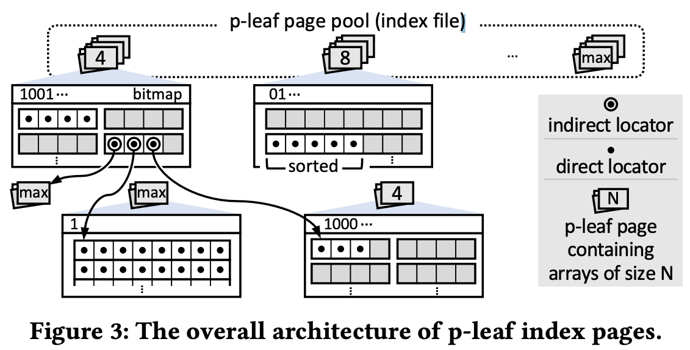
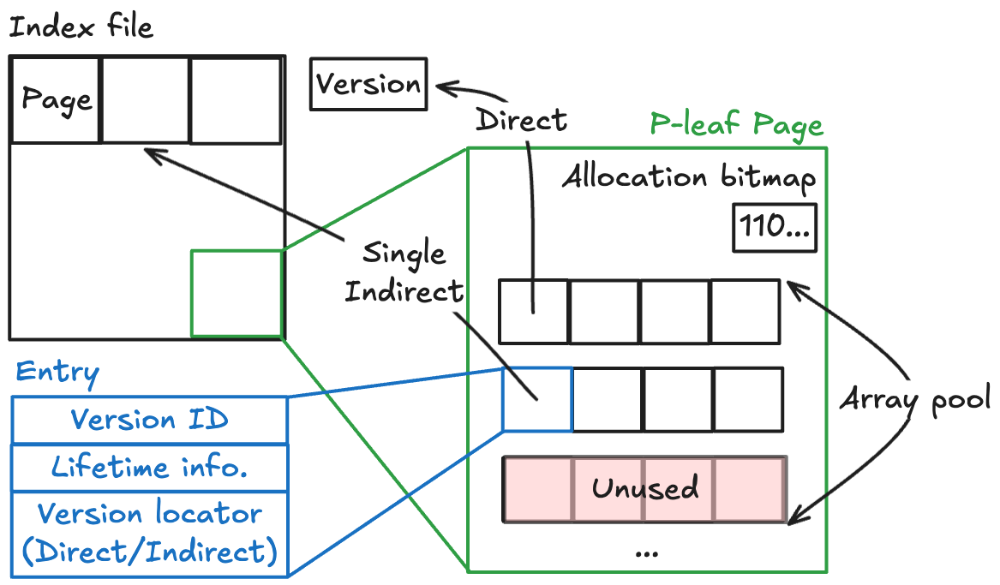

<!DOCTYPE html>
<html><head><title>(논문) DIVA: Making MVCC Systems HTAP-Friendly (4. Provisional Version Indexing)</title><meta charSet="utf-8"/><meta name="viewport" content="width=device-width, initial-scale=1.0"/><meta property="og:title" content="(논문) DIVA: Making MVCC Systems HTAP-Friendly (4. Provisional Version Indexing)"/><meta property="og:description" content="원본 논문 이 글은 DIVA: Making MVCC Systems HTAP-Friendly (SIGMOD’22) 논문을 읽고 정리한 글입니다. 별도의 명시가 없으면, 본 논문에서 그림을 가져왔습니다. 4.1. A Homage to the UNIX Philosophy § 4."/><meta property="og:image" content="https://mdg.haeramk.im/static/og-image.png"/><meta property="og:width" content="1200"/><meta property="og:height" content="675"/><link rel="icon" href="../../../../../../static/icon.png"/><meta name="description" content="원본 논문 이 글은 DIVA: Making MVCC Systems HTAP-Friendly (SIGMOD’22) 논문을 읽고 정리한 글입니다. 별도의 명시가 없으면, 본 논문에서 그림을 가져왔습니다. 4.1. A Homage to the UNIX Philosophy § 4."/><meta name="generator" content="Quartz"/><link rel="preconnect" href="https://fonts.googleapis.com"/><link rel="preconnect" href="https://fonts.gstatic.com"/><link href="../../../../../../index.css" rel="stylesheet" type="text/css" spa-preserve/><link href="https://cdn.jsdelivr.net/npm/katex@0.16.0/dist/katex.min.css" rel="stylesheet" type="text/css" spa-preserve/><link href="https://fonts.googleapis.com/css2?family=IBM Plex Mono&amp;family=Gowun Batang:wght@400;700&amp;family=Gowun Dodum:ital,wght@0,400;0,600;1,400;1,600&amp;display=swap" rel="stylesheet" type="text/css" spa-preserve/><script src="../../../../../../prescript.js" type="application/javascript" spa-preserve></script><script type="application/javascript" spa-preserve>const fetchData = fetch(`../../../../../../static/contentIndex.json`).then(data => data.json())</script></head><body data-slug="gardens/database/transaction/papers/diva.2022.sigmod.org/full/4.-Provisional-Version-Indexing-(DIVA,-SIGMOD-22)"><div id="quartz-root" class="page"><div id="quartz-body"><div class="left sidebar"><h1 class="page-title "><a href="../../../../../..">Madison Digital Garden</a></h1><div class="spacer mobile-only"></div><div class="search "><div id="search-icon"><p>Search</p><div></div><svg tabIndex="0" aria-labelledby="title desc" role="img" xmlns="http://www.w3.org/2000/svg" viewBox="0 0 19.9 19.7"><title id="title">Search</title><desc id="desc">Search</desc><g class="search-path" fill="none"><path stroke-linecap="square" d="M18.5 18.3l-5.4-5.4"></path><circle cx="8" cy="8" r="7"></circle></g></svg></div><div id="search-container"><div id="search-space"><input autocomplete="off" id="search-bar" name="search" type="text" aria-label="Search for something" placeholder="Search for something"/><div id="results-container"></div></div></div></div><div class="darkmode "><input class="toggle" id="darkmode-toggle" type="checkbox" tabIndex="-1"/><label id="toggle-label-light" for="darkmode-toggle" tabIndex="-1"><svg xmlns="http://www.w3.org/2000/svg" xmlnsXlink="http://www.w3.org/1999/xlink" version="1.1" id="dayIcon" x="0px" y="0px" viewBox="0 0 35 35" style="enable-background:new 0 0 35 35;" xmlSpace="preserve"><title>Light mode</title><path d="M6,17.5C6,16.672,5.328,16,4.5,16h-3C0.672,16,0,16.672,0,17.5    S0.672,19,1.5,19h3C5.328,19,6,18.328,6,17.5z M7.5,26c-0.414,0-0.789,0.168-1.061,0.439l-2,2C4.168,28.711,4,29.086,4,29.5    C4,30.328,4.671,31,5.5,31c0.414,0,0.789-0.168,1.06-0.44l2-2C8.832,28.289,9,27.914,9,27.5C9,26.672,8.329,26,7.5,26z M17.5,6    C18.329,6,19,5.328,19,4.5v-3C19,0.672,18.329,0,17.5,0S16,0.672,16,1.5v3C16,5.328,16.671,6,17.5,6z M27.5,9    c0.414,0,0.789-0.168,1.06-0.439l2-2C30.832,6.289,31,5.914,31,5.5C31,4.672,30.329,4,29.5,4c-0.414,0-0.789,0.168-1.061,0.44    l-2,2C26.168,6.711,26,7.086,26,7.5C26,8.328,26.671,9,27.5,9z M6.439,8.561C6.711,8.832,7.086,9,7.5,9C8.328,9,9,8.328,9,7.5    c0-0.414-0.168-0.789-0.439-1.061l-2-2C6.289,4.168,5.914,4,5.5,4C4.672,4,4,4.672,4,5.5c0,0.414,0.168,0.789,0.439,1.06    L6.439,8.561z M33.5,16h-3c-0.828,0-1.5,0.672-1.5,1.5s0.672,1.5,1.5,1.5h3c0.828,0,1.5-0.672,1.5-1.5S34.328,16,33.5,16z     M28.561,26.439C28.289,26.168,27.914,26,27.5,26c-0.828,0-1.5,0.672-1.5,1.5c0,0.414,0.168,0.789,0.439,1.06l2,2    C28.711,30.832,29.086,31,29.5,31c0.828,0,1.5-0.672,1.5-1.5c0-0.414-0.168-0.789-0.439-1.061L28.561,26.439z M17.5,29    c-0.829,0-1.5,0.672-1.5,1.5v3c0,0.828,0.671,1.5,1.5,1.5s1.5-0.672,1.5-1.5v-3C19,29.672,18.329,29,17.5,29z M17.5,7    C11.71,7,7,11.71,7,17.5S11.71,28,17.5,28S28,23.29,28,17.5S23.29,7,17.5,7z M17.5,25c-4.136,0-7.5-3.364-7.5-7.5    c0-4.136,3.364-7.5,7.5-7.5c4.136,0,7.5,3.364,7.5,7.5C25,21.636,21.636,25,17.5,25z"></path></svg></label><label id="toggle-label-dark" for="darkmode-toggle" tabIndex="-1"><svg xmlns="http://www.w3.org/2000/svg" xmlnsXlink="http://www.w3.org/1999/xlink" version="1.1" id="nightIcon" x="0px" y="0px" viewBox="0 0 100 100" style="enable-background='new 0 0 100 100'" xmlSpace="preserve"><title>Dark mode</title><path d="M96.76,66.458c-0.853-0.852-2.15-1.064-3.23-0.534c-6.063,2.991-12.858,4.571-19.655,4.571  C62.022,70.495,50.88,65.88,42.5,57.5C29.043,44.043,25.658,23.536,34.076,6.47c0.532-1.08,0.318-2.379-0.534-3.23  c-0.851-0.852-2.15-1.064-3.23-0.534c-4.918,2.427-9.375,5.619-13.246,9.491c-9.447,9.447-14.65,22.008-14.65,35.369  c0,13.36,5.203,25.921,14.65,35.368s22.008,14.65,35.368,14.65c13.361,0,25.921-5.203,35.369-14.65  c3.872-3.871,7.064-8.328,9.491-13.246C97.826,68.608,97.611,67.309,96.76,66.458z"></path></svg></label></div></div><div class="center"><div class="page-header"><div class="popover-hint"><h1 class="article-title ">(논문) DIVA: Making MVCC Systems HTAP-Friendly (4. Provisional Version Indexing)</h1><p class="content-meta ">Oct 08, 2024, 7 min read</p><ul class="tags "><li><a href="../../../../../../tags/database" class="internal tag-link">#database</a></li><li><a href="../../../../../../tags/terms" class="internal tag-link">#terms</a></li><li><a href="../../../../../../tags/db-concurrency" class="internal tag-link">#db-concurrency</a></li><li><a href="../../../../../../tags/db-index" class="internal tag-link">#db-index</a></li></ul></div></div><article class="popover-hint"><blockquote class="callout" data-callout="info">
<div class="callout-title">
                  <div class="callout-icon"><svg xmlns="http://www.w3.org/2000/svg" width="100%" height="100%" viewBox="0 0 24 24" fill="none" stroke="currentColor" stroke-width="2" stroke-linecap="round" stroke-linejoin="round"><circle cx="12" cy="12" r="10"></circle><line x1="12" y1="16" x2="12" y2="12"></line><line x1="12" y1="8" x2="12.01" y2="8"></line></svg></div>
                  <div class="callout-title-inner"><p>원본 논문 </p></div>
                  
                </div>
<ul>
<li>이 글은 <a href="https://dl.acm.org/doi/10.1145/3514221.3526135" class="external">DIVA: Making MVCC Systems HTAP-Friendly (SIGMOD’22)</a> 논문을 읽고 정리한 글입니다.</li>
<li>별도의 명시가 없으면, 본 논문에서 그림을 가져왔습니다.</li>
</ul>
</blockquote>
<h2 id="41-a-homage-to-the-unix-philosophy">4.1. A Homage to the UNIX Philosophy<a aria-hidden="true" tabindex="-1" href="#41-a-homage-to-the-unix-philosophy" class="internal"> §</a></h2>
<h3 id="411-honoring-tradition">4.1.1. Honoring tradition.<a aria-hidden="true" tabindex="-1" href="#411-honoring-tradition" class="internal"> §</a></h3>
<blockquote class="callout" data-callout="tip">
<div class="callout-title">
                  <div class="callout-icon"><svg xmlns="http://www.w3.org/2000/svg" width="100%" height="100%" viewBox="0 0 24 24" fill="none" stroke="currentColor" stroke-width="2" stroke-linecap="round" stroke-linejoin="round"><path d="M8.5 14.5A2.5 2.5 0 0 0 11 12c0-1.38-.5-2-1-3-1.072-2.143-.224-4.054 2-6 .5 2.5 2 4.9 4 6.5 2 1.6 3 3.5 3 5.5a7 7 0 1 1-14 0c0-1.153.433-2.294 1-3a2.5 2.5 0 0 0 2.5 2.5z"></path></svg></div>
                  <div class="callout-title-inner"><p>Summary for adopting UNIX Inode </p></div>
                  
                </div>
<ul>
<li><a href="../../../../../../gardens/database/transaction/papers/diva.2022.sigmod.org/full/3.-Design-Overview-of-DIVA-(DIVA,-SIGMOD-22)#33-design-rationale-for-version-indexing" class="internal" data-slug="gardens/database/transaction/papers/diva.2022.sigmod.org/full/3.-Design-Overview-of-DIVA-(DIVA,-SIGMOD-22)">Section 3.3.</a> 에서 설명한 내용을 좀 끌고와 보자면,</li>
<li>Version 은 ephemeral 하기 때문에 이를 묶어주는 version index 가 차지하는 공간은 가변적으로 변하고,</li>
<li>이런 가변 공간을 handling 하기에 inode 만한 자료구조가 없기 때문에 이것을 활용하는 것이다.</li>
</ul>
</blockquote>
<ul>
<li><a href="../../../../../../gardens/os/fs/terms/Inode-(File-System)" class="internal" data-slug="gardens/os/fs/terms/Inode-(File-System)">UNIX Inode</a> 는 진자루 오래된 자료구조이고, 그의 효율성을 오랜 기간 동안 입증받아왔다.</li>
<li>이놈은 metadata 와 data 를 분리시킨다는 점에서 DIVA 의 “Separation” 철학과 많이 닮아 있다.</li>
<li>따라서 Provisional version index 에서도 이놈과 비슷하게,
<ul>
<li>Direct 및 single indirection 으로 version data 를 가리키게 해놓았고,</li>
<li>많은 FS 에서 미리 공간을 확보해 놓고 사용하는 것처럼 여기에서도 shared index node pool 을 사용한다.</li>
</ul>
</li>
</ul>
<h3 id="412-paving-new-paths">4.1.2. Paving new paths.<a aria-hidden="true" tabindex="-1" href="#412-paving-new-paths" class="internal"> §</a></h3>
<ul>
<li>기존의 inode 와의 차이점은 다음의 두 가지이다:
<ol>
<li>Index array 의 사이즈가 가변 (<em>Multi-granularity</em>) 이다.
<ul>
<li>우선 <em>Index array</em> 는 Inode 에서 direct, indirect 에 사용되는 array 에 대응되는 개념이라 생각하면 된다.</li>
<li>가변 사이즈를 사용하는 것은 fixed-size array 는 internal fragmentation 이 발생할 수 있기 때문.</li>
<li>이것은 <a href="../../../../../../gardens/database/modern/terms/On-Line-Transactional-Processing,-OLTP-(Modern-Database)" class="internal" data-slug="gardens/database/modern/terms/On-Line-Transactional-Processing,-OLTP-(Modern-Database)">OLTP</a> query 의 경우에는 lifetime 이 작고 (short-lived), 따라서 작은 version window 를 필요로 하고</li>
<li><a href="../../../../../../gardens/database/modern/terms/On-Line-Analytical-Processing,-OLAP-(Modern-Database)" class="internal" data-slug="gardens/database/modern/terms/On-Line-Analytical-Processing,-OLAP-(Modern-Database)">OLAP</a> query 의 경우에는 lifetime 이 크기 (long-lived) 때문에 긴 version window 를 필요로 하기 때문이다.</li>
</ul>
</li>
<li>Version space 는 node reboot 시에 empty 된다는 것이다.
<ul>
<li>당연히 reboot 시에는 해당 version 을 필요로 하는 transaction 이 다 죽었으니까 이 version 들은 전부 필요 없기 때문.</li>
<li>즉, 이 부분에 대해서는 crash consistency 가 필요 없다는 것이다.</li>
</ul>
</li>
</ol>
</li>
</ul>
<h2 id="42-architecture">4.2. Architecture<a aria-hidden="true" tabindex="-1" href="#42-architecture" class="internal"> §</a></h2>
<h3 id="420-prologue">4.2.0 Prologue<a aria-hidden="true" tabindex="-1" href="#420-prologue" class="internal"> §</a></h3>
<p></p>
<p></p>
<ul>
<li>일단 <em>Index file</em> 을 pagination 해서 여러 page 들로 나눈다.
<ul>
<li>이 page 를 <em>Index page</em> 혹은 <em>Provisional-leaf page</em> (<em>P-leaf page</em>) 라고 부른다.</li>
<li>이름을 <em>Provisional</em> 라고 지은 것은 일시적으로는 이놈이 <a href="../../../../../../gardens/database/index/drafts/Index-(Database)" class="internal" data-slug="gardens/database/index/drafts/Index-(Database)">Primary index</a> 를 넘어 version storage 를 커버하기 때문이다.
<ul>
<li>이 말이 이해가 안된다면, version index 하나는 primary index 의 leaf 와 그놈에 대한 version 들 (version storage) 에 접근할 수 있게 해주는데</li>
<li>결국에는 version 은 operation fail 시 사라지는 놈이기에 “일시적인” (<em>Provisional</em>) leaf page 라고 할 수 있는 것.</li>
</ul>
</li>
</ul>
</li>
<li>각 page 안에는 동일한 크기의 array (equal-size index array) 여러개를 생성해 <em>Index array pool</em> 을 마련한다.
<ul>
<li>이 array pool 의 array 들 중 어떤 것이 사용되고 있는지는 bitmap 으로 관리된다.</li>
</ul>
</li>
<li>이 array 의 size 는 index page 마다 다를 수 있다 (array capacity may differ).
<ul>
<li>즉, array 의 size 는 한 index page 내에서는 동일하지만, index page 간에는 다를 수 있다는 것.</li>
<li>위에서 말한 <em>Multi-granularity</em> 가 이 의미이다.</li>
</ul>
</li>
<li>그리고 이 entry 하나는 <em>Version ID</em>, <em>Lifetime info.</em>, <em>Version locator</em> 세 가지 정보가 담기게 된다.
<ul>
<li>여기서 <em>Version locator</em> 는 다른놈을 가리키는 것 (즉, pointer) 이다.</li>
<li>마치 inode 처럼 이놈도 어떤 Version 을 가리키거나 (direct) 혹은 다른 <em>Index page</em> 를 가리킬 수 있다 (indirect).</li>
</ul>
</li>
</ul>
<h3 id="421-multigranular-index-arrays">4.2.1. Multigranular index arrays.<a aria-hidden="true" tabindex="-1" href="#421-multigranular-index-arrays" class="internal"> §</a></h3>
<ul>
<li><a href="../../../../../../gardens/os/fs/draft/Extended-Filesystem,-EXTFS-(File-System)" class="internal" data-slug="gardens/os/fs/draft/Extended-Filesystem,-EXTFS-(File-System)">Ext4</a> 의 경우에는 최대 file size 가 16TiB 까지 늘어날 수 있지만, 보통 p-leaf page 에서는 그정도로 늘어날 일이 없다.</li>
<li>그래서 p-leaf page 에서는 <span class="math math-inline"><span class="katex"><span class="katex-html" aria-hidden="true"><span class="base"><span class="strut" style="height:0.8141em;"></span><span class="mord"><span class="mord">2</span><span class="msupsub"><span class="vlist-t"><span class="vlist-r"><span class="vlist" style="height:0.8141em;"><span style="top:-3.063em;margin-right:0.05em;"><span class="pstrut" style="height:2.7em;"></span><span class="sizing reset-size6 size3 mtight"><span class="mord mtight"><span class="mord mtight">2</span></span></span></span></span></span></span></span></span></span></span></span></span> ~ <span class="math math-inline"><span class="katex"><span class="katex-html" aria-hidden="true"><span class="base"><span class="strut" style="height:0.8141em;"></span><span class="mord"><span class="mord">2</span><span class="msupsub"><span class="vlist-t"><span class="vlist-r"><span class="vlist" style="height:0.8141em;"><span style="top:-3.063em;margin-right:0.05em;"><span class="pstrut" style="height:2.7em;"></span><span class="sizing reset-size6 size3 mtight"><span class="mord mtight"><span class="mord mtight">8</span></span></span></span></span></span></span></span></span></span></span></span></span> 사이의 size 를 가지는 array 들이 배치될 수 있다.
<ul>
<li>물론 위에서 말한 것처럼 array size 는 한 p-leaf page 내에서는 통일되어 있고, 다른 p-leaf page 간에는 size 가 달라질 수도 있다는 의미이다.</li>
</ul>
</li>
<li>따라서 (single indirect 의 경우) p-leaf page 하나에서는 최대 <span class="math math-inline"><span class="katex"><span class="katex-html" aria-hidden="true"><span class="base"><span class="strut" style="height:1.0641em;vertical-align:-0.25em;"></span><span class="mopen">(</span><span class="mord"><span class="mord">2</span><span class="msupsub"><span class="vlist-t"><span class="vlist-r"><span class="vlist" style="height:0.8141em;"><span style="top:-3.063em;margin-right:0.05em;"><span class="pstrut" style="height:2.7em;"></span><span class="sizing reset-size6 size3 mtight"><span class="mord mtight"><span class="mord mtight">8</span></span></span></span></span></span></span></span></span><span class="mclose"><span class="mclose">)</span><span class="msupsub"><span class="vlist-t"><span class="vlist-r"><span class="vlist" style="height:0.8141em;"><span style="top:-3.063em;margin-right:0.05em;"><span class="pstrut" style="height:2.7em;"></span><span class="sizing reset-size6 size3 mtight"><span class="mord mtight"><span class="mord mtight">2</span></span></span></span></span></span></span></span></span><span class="mspace" style="margin-right:0.2778em;"></span><span class="mrel">=</span><span class="mspace" style="margin-right:0.2778em;"></span></span><span class="base"><span class="strut" style="height:0.8141em;"></span><span class="mord"><span class="mord">2</span><span class="msupsub"><span class="vlist-t"><span class="vlist-r"><span class="vlist" style="height:0.8141em;"><span style="top:-3.063em;margin-right:0.05em;"><span class="pstrut" style="height:2.7em;"></span><span class="sizing reset-size6 size3 mtight"><span class="mord mtight"><span class="mord mtight">16</span></span></span></span></span></span></span></span></span></span></span></span></span> 개의 version 에 접근할 수 있다.</li>
<li>또한 indirect 의 경우 다른 p-leaf page 를 가리키므로 이 hierarchy 에 속한 p-leaf page 간에도 다른 array size 를 가질 수 있다.</li>
<li>다만 이론상으로는 이 indirection 에는 제한이 없지만, single indirection 을 넘어서는 경우는 없기 때문에 version 하나를 찾아가는데 최대 2번의 p-leaf page IO 면 충분하다.</li>
</ul>
<h3 id="422-quasi-durable-index-space">4.2.2. Quasi-durable index space.<a aria-hidden="true" tabindex="-1" href="#422-quasi-durable-index-space" class="internal"> §</a></h3>
<ul>
<li>위에서 말한 대로, version 은 failure 시 사라지기에 이 version index 도 permanent 할 필요가 없다.
<ul>
<li>이 말은 즉, version index 는 logging 을 하거나 recovery 를 할 필요도 없고</li>
<li>Crash consistency 를 위한 metadata 를 가지고 있을 필요도 없으며</li>
<li>Update 순서를 조정하는 등의 짓거리를 하지 않아도 된다.</li>
</ul>
</li>
<li>유일하게 필요한 것은 memory 가 작은 환경에서 잦은 memory swap 이 일어났을 때에도 disk 로 swap 된 p-leaf page 에 잘 연결될 수만 있으면 된다는 것이다.</li>
<li>또한 이에 따라 p-leaf page 의 free list 를 관리하기 위해서 concurrent stack 하나면 충분했다고 한다.
<ul>
<li><em>Concurrent stack</em> 이 뭔지 자세히는 설명되어있지 않지만, 그냥 thread-safe stack 이라고 생각해도 된다.</li>
</ul>
</li>
</ul>
<h2 id="43-managing-version-index-space">4.3. Managing Version Index Space<a aria-hidden="true" tabindex="-1" href="#43-managing-version-index-space" class="internal"> §</a></h2>
<h3 id="430-prologue">4.3.0. Prologue<a aria-hidden="true" tabindex="-1" href="#430-prologue" class="internal"> §</a></h3>
<ul>
<li>여기에서는 <em>Provisional version index</em> 를 관리하는 방법들 (가령 index concurrency) 에 대해 살펴보자.</li>
</ul>
<h3 id="431-resource-allocation">4.3.1. Resource allocation<a aria-hidden="true" tabindex="-1" href="#431-resource-allocation" class="internal"> §</a></h3>
<ul>
<li></li>
</ul>
<h3 id="432-space-compaction">4.3.2. Space compaction.<a aria-hidden="true" tabindex="-1" href="#432-space-compaction" class="internal"> §</a></h3>
<h3 id="433-managing-concurrency">4.3.3. Managing concurrency.<a aria-hidden="true" tabindex="-1" href="#433-managing-concurrency" class="internal"> §</a></h3></article></div><div class="right sidebar"><div class="graph "><h3>Graph View</h3><div class="graph-outer"><div id="graph-container" data-cfg="{&quot;drag&quot;:true,&quot;zoom&quot;:true,&quot;depth&quot;:1,&quot;scale&quot;:1.1,&quot;repelForce&quot;:0.5,&quot;centerForce&quot;:0.3,&quot;linkDistance&quot;:30,&quot;fontSize&quot;:0.6,&quot;opacityScale&quot;:1,&quot;showTags&quot;:true,&quot;removeTags&quot;:[]}"></div><svg version="1.1" id="global-graph-icon" xmlns="http://www.w3.org/2000/svg" xmlnsXlink="http://www.w3.org/1999/xlink" x="0px" y="0px" viewBox="0 0 55 55" fill="currentColor" xmlSpace="preserve"><path d="M49,0c-3.309,0-6,2.691-6,6c0,1.035,0.263,2.009,0.726,2.86l-9.829,9.829C32.542,17.634,30.846,17,29,17
	s-3.542,0.634-4.898,1.688l-7.669-7.669C16.785,10.424,17,9.74,17,9c0-2.206-1.794-4-4-4S9,6.794,9,9s1.794,4,4,4
	c0.74,0,1.424-0.215,2.019-0.567l7.669,7.669C21.634,21.458,21,23.154,21,25s0.634,3.542,1.688,4.897L10.024,42.562
	C8.958,41.595,7.549,41,6,41c-3.309,0-6,2.691-6,6s2.691,6,6,6s6-2.691,6-6c0-1.035-0.263-2.009-0.726-2.86l12.829-12.829
	c1.106,0.86,2.44,1.436,3.898,1.619v10.16c-2.833,0.478-5,2.942-5,5.91c0,3.309,2.691,6,6,6s6-2.691,6-6c0-2.967-2.167-5.431-5-5.91
	v-10.16c1.458-0.183,2.792-0.759,3.898-1.619l7.669,7.669C41.215,39.576,41,40.26,41,41c0,2.206,1.794,4,4,4s4-1.794,4-4
	s-1.794-4-4-4c-0.74,0-1.424,0.215-2.019,0.567l-7.669-7.669C36.366,28.542,37,26.846,37,25s-0.634-3.542-1.688-4.897l9.665-9.665
	C46.042,11.405,47.451,12,49,12c3.309,0,6-2.691,6-6S52.309,0,49,0z M11,9c0-1.103,0.897-2,2-2s2,0.897,2,2s-0.897,2-2,2
	S11,10.103,11,9z M6,51c-2.206,0-4-1.794-4-4s1.794-4,4-4s4,1.794,4,4S8.206,51,6,51z M33,49c0,2.206-1.794,4-4,4s-4-1.794-4-4
	s1.794-4,4-4S33,46.794,33,49z M29,31c-3.309,0-6-2.691-6-6s2.691-6,6-6s6,2.691,6,6S32.309,31,29,31z M47,41c0,1.103-0.897,2-2,2
	s-2-0.897-2-2s0.897-2,2-2S47,39.897,47,41z M49,10c-2.206,0-4-1.794-4-4s1.794-4,4-4s4,1.794,4,4S51.206,10,49,10z"></path></svg></div><div id="global-graph-outer"><div id="global-graph-container" data-cfg="{&quot;drag&quot;:true,&quot;zoom&quot;:true,&quot;depth&quot;:-1,&quot;scale&quot;:0.9,&quot;repelForce&quot;:0.5,&quot;centerForce&quot;:0.3,&quot;linkDistance&quot;:30,&quot;fontSize&quot;:0.6,&quot;opacityScale&quot;:1,&quot;showTags&quot;:true,&quot;removeTags&quot;:[]}"></div></div></div><div class="toc desktop-only"><button type="button" id="toc"><h3>Table of Contents</h3><svg xmlns="http://www.w3.org/2000/svg" width="24" height="24" viewBox="0 0 24 24" fill="none" stroke="currentColor" stroke-width="2" stroke-linecap="round" stroke-linejoin="round" class="fold"><polyline points="6 9 12 15 18 9"></polyline></svg></button><div id="toc-content"><ul class="overflow"><li class="depth-0"><a href="#41-a-homage-to-the-unix-philosophy" data-for="41-a-homage-to-the-unix-philosophy">4.1. A Homage to the UNIX Philosophy</a></li><li class="depth-1"><a href="#411-honoring-tradition" data-for="411-honoring-tradition">4.1.1. Honoring tradition.</a></li><li class="depth-1"><a href="#412-paving-new-paths" data-for="412-paving-new-paths">4.1.2. Paving new paths.</a></li><li class="depth-0"><a href="#42-architecture" data-for="42-architecture">4.2. Architecture</a></li><li class="depth-1"><a href="#420-prologue" data-for="420-prologue">4.2.0 Prologue</a></li><li class="depth-1"><a href="#421-multigranular-index-arrays" data-for="421-multigranular-index-arrays">4.2.1. Multigranular index arrays.</a></li><li class="depth-1"><a href="#422-quasi-durable-index-space" data-for="422-quasi-durable-index-space">4.2.2. Quasi-durable index space.</a></li><li class="depth-0"><a href="#43-managing-version-index-space" data-for="43-managing-version-index-space">4.3. Managing Version Index Space</a></li><li class="depth-1"><a href="#430-prologue" data-for="430-prologue">4.3.0. Prologue</a></li><li class="depth-1"><a href="#431-resource-allocation" data-for="431-resource-allocation">4.3.1. Resource allocation</a></li><li class="depth-1"><a href="#432-space-compaction" data-for="432-space-compaction">4.3.2. Space compaction.</a></li><li class="depth-1"><a href="#433-managing-concurrency" data-for="433-managing-concurrency">4.3.3. Managing concurrency.</a></li></ul></div></div><div class="backlinks "><h3>Backlinks</h3><ul class="overflow"><li><a href="../../../../../../gardens/database/transaction/papers/diva.2022.sigmod.org/full/3.-Design-Overview-of-DIVA-(DIVA,-SIGMOD-22)" class="internal">(논문) DIVA: Making MVCC Systems HTAP-Friendly (3. Design Overview of DIVA)</a></li></ul></div></div></div><footer class><hr/><p>Created with <a href="https://quartz.jzhao.xyz/">Quartz v4.1.0</a>, © 2025</p><ul><li><a href="https://github.com/haeramkeem">GitHub</a></li><li><a href="www.linkedin.com/in/haeram-kim-277404220">LinkedIn</a></li><li><a href="mailto:haeram.kim1@gmail.com">Email</a></li></ul></footer></div></body><script type="application/javascript">// quartz/components/scripts/quartz/components/scripts/callout.inline.ts
function toggleCallout() {
  const outerBlock = this.parentElement;
  outerBlock.classList.toggle(`is-collapsed`);
  const collapsed = outerBlock.classList.contains(`is-collapsed`);
  const height = collapsed ? this.scrollHeight : outerBlock.scrollHeight;
  outerBlock.style.maxHeight = height + `px`;
  let current = outerBlock;
  let parent = outerBlock.parentElement;
  while (parent) {
    if (!parent.classList.contains(`callout`)) {
      return;
    }
    const collapsed2 = parent.classList.contains(`is-collapsed`);
    const height2 = collapsed2 ? parent.scrollHeight : parent.scrollHeight + current.scrollHeight;
    parent.style.maxHeight = height2 + `px`;
    current = parent;
    parent = parent.parentElement;
  }
}
function setupCallout() {
  const collapsible = document.getElementsByClassName(
    `callout is-collapsible`
  );
  for (const div of collapsible) {
    const title = div.firstElementChild;
    if (title) {
      title.removeEventListener(`click`, toggleCallout);
      title.addEventListener(`click`, toggleCallout);
      const collapsed = div.classList.contains(`is-collapsed`);
      const height = collapsed ? title.scrollHeight : div.scrollHeight;
      div.style.maxHeight = height + `px`;
    }
  }
}
document.addEventListener(`nav`, setupCallout);
window.addEventListener(`resize`, setupCallout);
</script><script type="module">
          import mermaid from 'https://cdn.jsdelivr.net/npm/mermaid/dist/mermaid.esm.min.mjs';
          const darkMode = document.documentElement.getAttribute('saved-theme') === 'dark'
          mermaid.initialize({
            startOnLoad: false,
            securityLevel: 'loose',
            theme: darkMode ? 'dark' : 'default'
          });
          document.addEventListener('nav', async () => {
            await mermaid.run({
              querySelector: '.mermaid'
            })
          });
          </script><script src="https://cdn.jsdelivr.net/npm/katex@0.16.7/dist/contrib/copy-tex.min.js" type="application/javascript"></script><script src="https://www.googletagmanager.com/gtag/js?id=G-N68CCP1QHG" type="application/javascript"></script><script src="../../../../../../postscript.js" type="module"></script></html>